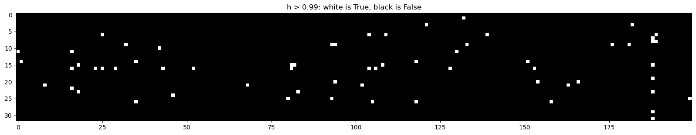

import torch
import torch.nn.functional as F
import matplotlib.pyplot as plt
import mathBatch Normalization
Applying Activations, Gradients, and Batch Normalization
1- Starter Code (from previous MLP part)
words = open("names.txt", "r").read().splitlines()
print(words[:8])
print(len(words))['emma', 'olivia', 'ava', 'isabella', 'sophia', 'charlotte', 'mia', 'amelia']
32033chars = sorted(list(set("".join(words))))
stoi = {s: i + 1 for i, s in enumerate(chars)}
stoi["."] = 0
itos = {i: s for s, i in stoi.items()}
vocab_size = len(stoi)
print(itos)
print(vocab_size){1: 'a', 2: 'b', 3: 'c', 4: 'd', 5: 'e', 6: 'f', 7: 'g', 8: 'h', 9: 'i', 10: 'j', 11: 'k', 12: 'l', 13: 'm', 14: 'n', 15: 'o', 16: 'p', 17: 'q', 18: 'r', 19: 's', 20: 't', 21: 'u', 22: 'v', 23: 'w', 24: 'x', 25: 'y', 26: 'z', 0: '.'}
27block_size = 3
def build_dataset(words):
X, Y = [], []
for w in words:
context = [0] * block_size
for ch in w + '.':
ix = stoi[ch]
X.append(context)
Y.append(ix)
context = context[1:] + [ix]
X = torch.tensor(X)
Y = torch.tensor(Y)
print(X.shape, Y.shape)
return X, Y
import random
random.seed(42)
random.shuffle(words)
n1 = int(0.8*len(words))
n2 = int(0.9*len(words))
Xtr, Ytr = build_dataset(words[:n1])
Xdev, Ydev = build_dataset(words[n1:n2])
Xte, Yte = build_dataset(words[n2:])torch.Size([182625, 3]) torch.Size([182625])
torch.Size([22655, 3]) torch.Size([22655])
torch.Size([22866, 3]) torch.Size([22866])n_embd = 10
n_hidden = 200
g = torch.Generator().manual_seed(2147483647)
C = torch.randn((vocab_size, n_embd),generator=g)
W1 = torch.randn((n_embd * block_size, n_hidden),generator=g)
b1 = torch.randn(n_hidden,generator=g)
W2 = torch.randn((n_hidden, vocab_size),generator=g)
b2 = torch.randn(vocab_size,generator=g)
parameters = [C, W1, b1, W2, b2]
print(sum(p.nelement() for p in parameters))
for p in parameters:
p.requires_grad = True11897max_steps = 200000
batch_size = 32
lossi = []
for i in range(max_steps):
# minibatch construct
ix = torch.randint(0, len(Xtr), (batch_size,), generator=g)
# batch
Xb, Yb = Xtr[ix], Ytr[ix]
# forward pass
emb = C[Xb] # embed characters into vector space
embcat = emb.view((emb.shape[0], -1)) # flatten
hpreact = embcat @ W1 + b1 # hidden layer pre-activation
h = torch.tanh(hpreact) # hidden layer activation
logits = h @ W2 + b2 # output layer
loss = F.cross_entropy(logits, Yb) # cross-entropy loss
# backward pass
for p in parameters:
p.grad = None
loss.backward()
# update
lr = 0.1 if i < 100000 else 0.01
for p in parameters:
p.data -= lr * p.grad
# track stats
if i % 10000 == 0:
print(f"{i} / {max_steps}: {loss.item()}")
lossi.append(loss.item())
break0 / 200000: 27.881732940673828@torch.no_grad()
def split_loss(split):
x,y = {
"train": (Xtr, Ytr),
"dev": (Xdev, Ydev),
"test": (Xte, Yte),
}[split]
emb = C[x] # (N, block_size, n_embd)
embcat = emb.view((emb.shape[0], -1)) # (N, block_size * n_embd)
hpreact = embcat @ W1 + b1 # (N, n_hidden)
h = torch.tanh(hpreact) # (N, n_hidden)
logits = h @ W2 + b2 # (N, vocab_size)
loss = F.cross_entropy(logits, y)
print(f"{split} loss: {loss.item()}")
split_loss("train")
split_loss("dev")train loss: 25.167741775512695
dev loss: 25.140993118286133# sampling from the model
g = torch.Generator().manual_seed(2147483647 + 10)
for _ in range(20):
out = []
context = [0] * block_size
while True:
# Forward pass
emb = C[torch.tensor([context])]
h = torch.tanh(emb.view(1,-1) @ W1 + b1)
logits = h @ W2 + b2
probs = F.softmax(logits, dim = 1)
ix = torch.multinomial(probs, num_samples = 1).item()
# Shift the Context Window
context = context[1:] + [ix]
if ix == 0:
break
out.append(ix)
print("".join(itos[i] for i in out))rrnhvqbgcdyhshwjkfickkhgkbdnrzkhjkyikdixjyrnuodrewaesyxshvyycoewidtesjrhguyozvyycoewidtesjrhguyozvwucovwidfcvkhhjkdokhdnejkygkhojyhguyozvwucovwths
rrnhodyddddddddddddddddddddddddddddddddddddddddddddddddddddddxshvyycoes
rrnhvvyhvkrhxvymhjryhcyysewylsovyyhadiddxshvyyhjkyixfntraevqhccyhguyozvyyhjkdixjy
rrnhvvyhcyyshvyyhjkdoewidtesjrhguyozvwthslrhcgfyyoaddradiddadiddxshvyyhjkyixfkcoyhshwjkficbesrrmhokyicbesrrmhokyrnnxvymhjzigkyoadiddadiddadiddadiddaddrzvwthslrindiejoyhshodydzshvyyhdjrhguyozvwuhjryhcyryhcyysovyyhjkdixjyrhgtfxjkcynsrqhs
rrnhvqbgcdyhddrzvwthslrhcgfccamhjzigkyozvwthslkdokhdnejkyikkoon
hvqbgsewgmtiofvwovsvcvvyhcyysewgmtiofvyrhguyozvwucovwthslrhcgfyyoadiddxshvyyhjkdixjy
rrnhvvyhcyyshvyyhjkdixjyrnuxjrrhshojyhguyozvwthslkdaadjdyhddrzvwthslrhcgfccymgdoshvyyhjkdoewiekkoovwidtesjrhguyozvyyhouyhodydiddxshvyyhjkdixjyrnnxvymhjkdixjyhguyozvwthslkdaadjdyhddrzvwucovwixtyxfvwovsmcjkhgkbdnrzccvnhguyozvyycoewidtesjrhguyozvwthsewgmtiojyhguyozvwthslrhcgfycbyhidigdyxzvkhhjkdixjyrnuxjrrhshwjkhgkbdnrzothslkdjxvcyhguyozvyyhdyrhguyozvwucovwthslkdixjyrnuodrewaesyxshvyicbesyxshvyyhjkdixjyrhguyozvwuhjryhcyyshvyyhjkdixjy
rrnhvqbgcdyhdyrzucovwths
rrnhodydiejoyhshodydiejoyhshwjkfickkhgkbdnrzkhjciyfvyrhguyozvwuhjryhcyyszvyyhodydiedixjyrnuoduhjryhcyysewgmtiofvyrhuhrzkhjnfccyhguyozvyhcyyshvyyhodydiddxshvyyhjkdixjyrnuxjnhguyozvwucovwthslkdaadzdyxzvkhhxoyvyhcyysovyyhddrzvwthsewgmtiofvwovsvcvvkhhjkdgxyyrzucovwths
rrnhvqbgxyyrzjtyofwyxshvyyhjkyixfkcovwthsewylsonhovwixtyxfvwthslkdokhdnguhddrzvwuhjryhcyyszvwthslkdaadjdyhshfyyoadiddxshvyyhdyrzgthxjyrnnxvymhjzigkyojyhguyozvwthslkdaadjdyhddrewaesyxshvyyhddrzvwuhjryhcyyshvyyhjkygkhynguhddrzvwuhjryhcyyshvyyhjkyikkoon
rrnhodydiddxshvdixjyrnnvqhccyhguyozvwuhjryhcyysrnshxjyrnnxvymhjkyixfkkrnnxvymhjzigkyojyhguyozvwucovwthslrhcgfccyhguyozvwuhjryhcyyshvyyhodydiejoyhshwjkhgkbdnrzothslrhcgfccymgubdxshvyyhjkyixfkcoyhshwjkhgkbynrrhwvkhhjkyixfkcoyhshodydiejoyhshwjkhgkbdnrzothsewgmtiofvwows
rrnhodydiejoyhshojyhguyozvwuhjryhodydiediddadiddadiddadiddxshvyyhodydddddddhehozwidikdixjy
hvcyhguyozvwthslrhcgfccyhguyozvwths
rrnhvvyhcyyshvyyhodydiedaejqhgcbyhidikdixjyrnurzshvyyhjkigkyojvwucovwthslkdaadzdyxzvkhhjkyojyhguyozvwuhjryhcyyshvyycoesrrmhokyrnnxvymhjryhcyysewywseshwjkhgkbdnrzoahodydiejoyhshfyyoadiddadiddadiddxshvyyhjkdixjyrnnxvymhjzigdyxzvkhhjkdixjyrnnxvqrhshodyddddddddhshojyhguyozvyyhddrxjhthojyhguyozvwuhjryhcyysewgmtiofvyrhguyozvyyhodydiediediddxshvyyhjkyikkoon
rrnhodydiejoyhshvyyhjkdixjyrnuxjrrhshodydiejoyhshojyhguyozvwthslkdokhdnejkhgkbdnrzshvyyhjkdokhmldoewidtesjrhguyozvwths
rrnhvvyhcyryhcyysovyycoewiekkoovwixtyxfvwovsmcjrkcoyhshojyhguyozvwuhjryhcyysewgmtiofvwaesyxshvyyhodydddxshvyyhodydiediddxshvyyhjkhgkbdnrzkhjnfccyhguyozvwthslrhcvyhcywcvkhhcyysewylsouhozwidtesjrhgcbyhidikdixjyrhguyozvwthslkdaadzdyxzvkhhjkygkbdnrzothslkdixjy
2- Fixing the Initialization
we expect similar probability for each character = 1 / 27
expected_loss = - torch.tensor(1 / 27).log()
print(expected_loss)tensor(3.2958)As you can see the previous approach to the problem was to randomnly initializes the weights and biases of the neural network which is a problem becuase our first few cycle of our training will entirely be dedicated to lowering the weights to point where neural network actually starts to learn the pattern.
hpreact = embcat @ W1 + b1 # hidden layer pre-activation
h = torch.tanh(hpreact) # hidden layer activationIn the above lines of code W1 and b1 are initialized randomnly so when hpreact is calculated and its activation is calculated using tanh function, the output of h tensor will most likely to be taking extreme values like 1 or -1.
Now if our h tensor is getting extreme values like 1 or -1, that neuron became dead and can’t longer take part in the learning process because during back propagation no loss will pass though that neuron. And the reason for that lies in the implementation of loss backpropgation function of the tanh:
def tanh(self):
x = self.data
t = (math.exp(2*x) - 1)/(math.exp(2*x) + 1)
out = Value(t, (self, ), 'tanh')
def _backward():
self.grad += (1 - t**2) * out.grad
out._backward = _backward
return outIn the _backward() function that gradient is calculated by subtracting the square of the output of tanh from 1 and then multiplying it with the global gradient in the case out.grad in line self.grad += (1 - t**2) * out.grad. So if h tensor is getting extreme values like 1 or -1 the output will definately be 0 * out.grad will will become 0 hence no loss will be propagated through the network and neural network can’t learn.
n_embd = 10
n_hidden = 200
g = torch.Generator().manual_seed(2147483647)
C = torch.randn((vocab_size, n_embd),generator=g)
W1 = torch.randn((n_embd * block_size, n_hidden),generator=g)
b1 = torch.randn(n_hidden,generator=g)
W2 = torch.randn((n_hidden, vocab_size),generator=g) * 0.01 # Initialize to small values
b2 = torch.randn(vocab_size,generator=g) * 0 # Remove bias
parameters = [C, W1, b1, W2, b2]
print(sum(p.nelement() for p in parameters))
for p in parameters:
p.requires_grad = True11897In neural network training, the phenomenon of dead neurons arises when the weights and biases are randomly initialized, leading to extreme values in the hidden layer activations. This issue primarily affects networks that utilize activation functions with saturation characteristics, such as the hyperbolic tangent (tanh) function.
Consider the following code snippet, where W1 and b1 are randomly initialized weights and biases, and hpreact represents the pre-activation of the hidden layer:
hpreact = embcat @ W1 + b1 # hidden layer pre-activation
h = torch.tanh(hpreact) # hidden layer activation using tanhWhen hpreact is calculated and then passed through the tanh activation function, the resulting h tensor may take extreme values like 1 or -1. This situation can render neurons “dead” during training.
The tanh activation function is defined as follows:
def tanh(x):
return (math.exp(2*x) - 1) / (math.exp(2*x) + 1)In the context of neural network training, the derivative of tanh is crucial for backpropagation. The backward pass for tanh involves multiplying the global gradient (out.grad) by the derivative of tanh, which is (1 - ^2(x)).
def tanh_backward(x, out_grad):
t = tanh(x)
return (1 - t**2) * out_gradIf the hidden layer activations (h) are consistently pushed to extreme values like 1 or -1, the gradient during backpropagation becomes close to zero. In the tanh activation’s derivative, the term (1 - ^2(x)) approaches zero for extreme values of (x), effectively nullifying the gradient.
# Backward pass for tanh in the network
def tanh_backward_pass(x, out_grad):
t = tanh(x)
return (1 - t**2) * out_grad
# During backpropagation
h_grad = tanh_backward_pass(hpreact, global_gradient)
W1_grad = embcat.T @ h_grad
b1_grad = torch.sum(h_grad, axis=0)ix = torch.randint(0, len(Xtr), (batch_size,), generator=g)
# batch
Xb, Yb = Xtr[ix], Ytr[ix]
# forward pass
emb = C[Xb] # embed characters into vector space
embcat = emb.view((emb.shape[0], -1)) # flatten
hpreact = embcat @ W1 + b1 # hidden layer pre-activation
h = torch.tanh(hpreact) # hidden layer activation
logits = h @ W2 + b2 # output layer
loss = F.cross_entropy(logits, Yb) # cross-entropy loss
print(f"initial loss = {loss}")initial loss = 3.322058677673343- Fixing the saturated tanh
h has many values = 1 or -1, so the gradient is 0
3.1 - Explaining The Problem
fig, axes = plt.subplots(1, 3, figsize = (15, 4))
axes[0].hist(hpreact.flatten().data, bins = 50);
axes[0].set_title("h pre-activation")
axes[1].hist(h.flatten().data, bins = 50);
axes[1].set_title("h")
axes[2].plot(torch.linspace(-5, 5, 100), torch.tanh(torch.linspace(-5, 5, 100)));
axes[2].set_title("tanh")Text(0.5, 1.0, 'tanh')comment: There’re many values = 1 or -1 in tanh because pre-activations with extreme values
➡️ changing the input doesn’t change the outputvalue much
➡️ the derivative of tanh is 1 - tanh^2
➡️ the gradient is 0 for all values = 1 or -1
plt.figure(figsize = (20, 10))
plt.imshow(h.abs() > 0.99, cmap = "gray", interpolation='nearest')
plt.title("h > 0.99: white is True, black is False");comment: if a column is completely white, it’s a dead neuron
3.2- Solution
To address the issue of dead neurons, various initialization techniques exist, such as He initialization, which helps mitigate the saturation problem during the initial phases of training. He initialization scales the weights based on the number of input units to the neuron.
# He initialization for tanh activation
W1 = torch.randn(input_size, hidden_size) * math.sqrt(2 / input_size)
b1 = torch.zeros(hidden_size)Applying proper weight initialization techniques can significantly contribute to the alleviation of dead neurons and facilitate more effective training in neural networks.
Multiplying weights with small number calculated using math.sqrt(2 / input_size) is more systematic approach and it’s the recommended way but for the moment we can multiply weights with small value to mitigate this issue
n_embd = 10
n_hidden = 200
g = torch.Generator().manual_seed(2147483647)
C = torch.randn((vocab_size, n_embd),generator=g)
W1 = torch.randn((n_embd * block_size, n_hidden),generator=g) * 0.2
b1 = torch.randn(n_hidden,generator=g) * 0.01
W2 = torch.randn((n_hidden, vocab_size),generator=g) * 0.01 # Initialize to small values
b2 = torch.randn(vocab_size,generator=g) * 0 # Remove bias
parameters = [C, W1, b1, W2, b2]
print(sum(p.nelement() for p in parameters))
for p in parameters:
p.requires_grad = True11897Now using the above solution we are making sure that we are not wasting the first few cycles of our training to squash down our weights to the point where our neural network actually starts learning, instead we somehow get the idea what our initial loss will look like before training and initialize the weights of the neural network accordingly.
ix = torch.randint(0, len(Xtr), (batch_size,), generator=g)
# batch
Xb, Yb = Xtr[ix], Ytr[ix]
# forward pass
emb = C[Xb] # embed characters into vector space
embcat = emb.view((emb.shape[0], -1)) # flatten
hpreact = embcat @ W1 + b1 # hidden layer pre-activation
h = torch.tanh(hpreact) # hidden layer activation
logits = h @ W2 + b2 # output layer
loss = F.cross_entropy(logits, Yb) # cross-entropy loss
print(f"initial loss = {loss}")initial loss = 3.3134593963623047fig, axes = plt.subplots(1, 3, figsize = (15, 4))
axes[0].hist(hpreact.flatten().data, bins = 50);
axes[0].set_title("h pre-activation")
axes[1].hist(h.flatten().data, bins = 50);
axes[1].set_title("h")
axes[2].plot(torch.linspace(-5, 5, 100), torch.tanh(torch.linspace(-5, 5, 100)));
axes[2].set_title("tanh")Text(0.5, 1.0, 'tanh')As we can see that most of our neurons in the neural network are active
plt.figure(figsize = (20, 10))
plt.imshow(h.abs() > 0.99, cmap = "gray", interpolation='nearest')
plt.title("h > 0.99: white is True, black is False");
4- Calculating the Init Scale: Kaiming Initialization
Where did the numbers (0.01, 0.1, 0.2) come from in initializing the weights and biases?
Kaiming Initialization is a weight initialization technique designed to address the vanishing/exploding gradient problem that can occur during the training of deep neural networks. It was introduced by Kaiming He et al. and is particularly effective when using activation functions like ReLU (Rectified Linear Unit). The initialization scales the weights based on the number of input units to the neuron, providing a good compromise between avoiding saturation and preventing explosion of gradients.
Now, let’s discuss the provided code and how Kaiming Initialization is applied:
Original Initialization (w):
w = torch.randn(10, 200)This initializes the weights w with random values. With mean close to 0 and standard deviation close to 1.
Pre-activation (y):
y = x @ wThis calculates the pre-activation y by performing matrix multiplication between input x and weights w.With mean close to 0 and standard deviation close to 3. The relatively high standard deviation indicates that the spread of the pre-activation values is large. This is also expected when you multiply a random input matrix x with randomly initialized weights w. The weights contribute to the variability in the pre-activation values, leading to a higher standard deviation.
Kaiming Initialization (w_scaled):
w_scaled = w / math.sqrt(w.shape[0])This scales the weights using Kaiming Initialization, dividing each weight by the square root of the number of input units (fan_in). In this case, w.shape[0] is 10.
Scaled Pre-activation (y_scaled):
y_scaled = x @ w_scaledThis calculates the pre-activation using the scaled weights.
By scaling the weights using Kaiming Initialization, the code aims to ensure that the pre-activation values remain within a reasonable range, preventing issues related to vanishing/exploding gradients and promoting stable training of the neural network. However due to modern innovations like Residual Networks, Normalization (Layer, Batch, Group), and Optimizers (Adam, RMSprop).
# 1000 training examples, 10 features
x = torch.randn(1000,10)
# 10 features, 200 neurons
w = torch.randn(10, 200)
# pre-activation
y = x @ w
print(f"x mean = {x.mean():.3f}, std = {x.std():.3f}")
print(f"y mean = {y.mean():.3f}, std = {y.std():.3f}")
fig, axes = plt.subplots(1, 3, figsize = (20, 5))
axes[0].hist(x.flatten().data, bins = 50, density = True)
axes[0].set_xticks(torch.linspace(y.min(), y.max(), 10))
axes[0].set_title("x original")
axes[1].hist(y.flatten().data, bins = 50, density = True)
axes[1].set_xticks(torch.linspace(y.min(), y.max(), 10))
axes[1].set_title("y original");
# scale the weights by Kaiming Initialization: dividing by sqrt(fan_in) = sqrt(10) in this case
w_scaled = w / math.sqrt(w.shape[0])
y_scaled = x @ w_scaled
axes[2].hist(y_scaled.flatten().data, bins = 50, density = True)
axes[2].set_xticks(torch.linspace(y.min(), y.max(), 10))
axes[2].set_title("y scaled");
print(f"y scaled mean = {y_scaled.mean():.3f}, std = {y_scaled.std():.3f}")x mean = -0.002, std = 0.999
y mean = -0.005, std = 3.042
y scaled mean = -0.002, std = 0.9625- Batch Normalization
We want to make pre-activations not extreme, but roughly a gaussian distribution (mean = 0, std = 1)
In the modern deep learning, Batch Normalization has emerged as a pivotal innovation, offering a departure from the traditional emphasis on meticulous weight initialization methods like Kaiming Initialization or scaling down weights during random initialization. This technique provides a means to dynamically normalize weights during the training process, mitigating issues related to internal covariate shift.
In the conventional paradigm, weights are typically initialized using techniques like Kaiming Initialization to ensure stable and effective training. However, as the network evolves during training, the distributions of activations in different layers can shift, leading to challenges in convergence. This is where Batch Normalization comes into play.
The fundamental principle behind Batch Normalization is to maintain normal distribution of weights within each layer. This is achieved by normalizing the pre-activation values using the mean and standard deviation computed across a mini-batch of data:
hpreact = embcat @ W1 + b
hpreact = (hpreact - hpreact.mean(dim=0, keepdim=True)) / (hpreact.std(dim=0, keepdim=True) + 1e-6)While Batch Normalization ensures normalized weights during forward passes, there is a crucial consideration: it may not be desirable to have normalized weights throughout the entire training process. This is due to the fact that normalization might impede the model’s ability to learn and adapt dynamically.
To address this concern, a dynamic scaling approach is introduced. Instead of uniformly normalizing weights during each forward pass, the weights are allowed to undergo dynamic shifts, scalings, down-scalings, or expansions based on the evolving needs of the training process. This is accomplished through the introduction of bngain (Batch Normalization Gain) and bnbias (Batch Normalization Bias) at the initialization of weights:
bngain = torch.ones((1, n_hidden))
bnbias = torch.zeros((1, n_hidden))
parameters = [C, W1, b1, W2, b2, bngain, bnbias]
for p in parameters:
p.requires_grad = TrueIn the training loop, the dynamic scaling is applied:
hpreact = (hpreact - hpreact.mean(dim=0, keepdim=True)) / (hpreact.std(dim=0, keepdim=True) + 1e-6)
hpreact = hpreact * bngain + bnbiasThis approach allows the neural network to learn the optimal scaling and shifting for its weights during the training process, adapting to the data distribution more flexibly. It strikes a balance between normalization and adaptability, enhancing the network’s ability to converge efficiently while avoiding the potential drawbacks of constant normalization.
5.1- Explaination
# MLP revisited
n_embd = 10 # the dimensionality of the character embedding vectors
n_hidden = 200 # the number of neurons in the hidden layer of the MLP
g = torch.Generator().manual_seed(2147483647) # for reproducibility
C = torch.randn((vocab_size, n_embd), generator=g)
W1 = torch.randn((n_embd * block_size, n_hidden), generator=g) * (5/3)/((n_embd * block_size)**0.5) #* 0.2
#b1 = torch.randn(n_hidden, generator=g) * 0.01
W2 = torch.randn((n_hidden, vocab_size), generator=g) * 0.01
b2 = torch.randn(vocab_size, generator=g) * 0
# BatchNorm parameters
bngain = torch.ones((1, n_hidden))
bnbias = torch.zeros((1, n_hidden))
parameters = [C, W1, W2, b2, bngain, bnbias]
print(sum(p.nelement() for p in parameters)) # number of parameters in total
for p in parameters:
p.requires_grad = True12097max_steps = 200000
batch_size = 32
lossi = []
for i in range(max_steps):
# minibatch construct
ix = torch.randint(0, Xtr.shape[0], (batch_size,), generator=g)
Xb, Yb = Xtr[ix], Ytr[ix] # batch X,Y
# forward pass
emb = C[Xb] # embed the characters into vectors
embcat = emb.view(emb.shape[0], -1) # concatenate the vectors
# Linear layer
hpreact = embcat @ W1 #+ b1 # hidden layer pre-activation
# BatchNorm layer
# -------------------------------------------------------------
bnmeani = hpreact.mean(0, keepdim=True)
bnstdi = hpreact.std(0, keepdim=True)
# we want it to be gaussian only at initialization (not always), the Neural Network may need to change the it
# Scale and Shift: scale the normalized batch by a learnable parameter (gamma) and shift it by another learnable parameter (beta)
hpreact = bngain * (hpreact - bnmeani) / bnstdi + bnbias
# -------------------------------------------------------------
# Non-linearity
h = torch.tanh(hpreact) # hidden layer
logits = h @ W2 + b2 # output layer
loss = F.cross_entropy(logits, Yb) # loss function
# backward pass
for p in parameters:
p.grad = None
loss.backward()
# update
lr = 0.1 if i < 100000 else 0.01 # step learning rate decay
for p in parameters:
p.data += -lr * p.grad
# track stats
if i % 10000 == 0: # print every once in a while
print(f'{i:7d}/{max_steps:7d}: {loss.item():.4f}')
lossi.append(loss.log10().item())
break 0/ 200000: 3.32395.2- Sampling
How to forward a single example to the model and get a prediction, even the model uses the mean ans std of the batch to normalize the input
We need a step after training, and find the mean and std of the whole training set
# Calibrate the batch norm statistics
with torch.no_grad():
emb = C[Xtr]
embcat = emb.view((emb.shape[0], -1))
hpreact = embcat @ W1 + b1
bnmean = hpreact.mean(dim=0, keepdim=True)
bnstd = hpreact.std(dim=0, keepdim=True)@torch.no_grad()
def split_loss(split):
x,y = {
"train": (Xtr, Ytr),
"dev": (Xdev, Ydev),
"test": (Xte, Yte),
}[split]
emb = C[x] # (N, block_size, n_embd)
embcat = emb.view((emb.shape[0], -1)) # (N, block_size * n_embd)
hpreact = embcat @ W1 + b1 # (N, n_hidden)
# batch norm in test mode
hpreact = (hpreact - bnmean) / (bnstd + 1e-6)
hpreact = hpreact * bngain + bnbias
h = torch.tanh(hpreact) # (N, n_hidden)
logits = h @ W2 + b2 # (N, vocab_size)
loss = F.cross_entropy(logits, y)
print(f"{split} loss: {loss.item()}")
split_loss("train")
split_loss("dev")train loss: 3.262329339981079
dev loss: 3.26176691055297855.2.1- It can be done during training (without additional step)
Now with the above bngain and bnbias approach there is issue that we are about the draw the sample after training we had also to do extra step
# batch norm in test mode
hpreact = (hpreact - bnmean) / (bnstd + 1e-6)
hpreact = hpreact * bngain + bnbiasTo solve this we could initialize the running mean and running standard deviation. And manually calculate the running mean and running standard deviation during training
with torch.no_grad():
bnmean_running = 0.999 * bnmean_running + 0.001 * bnmeani
bnstd_running = 0.999 * bnstd_running + 0.001 * bnstdiUsing the above approach we eventually have bnmean_running should equal to bnmean after training, same for bnstd_running and bnstd. And after the training we could use the bnmean_running and bnstd_running to draw sample
# batch norm in test mode
hpreact = (hpreact - bnmean_running) / (bnstd_running + 1e-6)
hpreact = hpreact * bngain + bnbiasAnd another thing to notice with the running mean and running standard deviation approach is that now we don’t need to calculate the b1, because it wouldn’t have effect on bnmeani and bnstdi when calculating the hpreact in the training loop.
# MLP revisited
n_embd = 10 # the dimensionality of the character embedding vectors
n_hidden = 200 # the number of neurons in the hidden layer of the MLP
g = torch.Generator().manual_seed(2147483647) # for reproducibility
C = torch.randn((vocab_size, n_embd), generator=g)
W1 = torch.randn((n_embd * block_size, n_hidden), generator=g) * (5/3)/((n_embd * block_size)**0.5) #* 0.2
#b1 = torch.randn(n_hidden, generator=g) * 0.01
W2 = torch.randn((n_hidden, vocab_size), generator=g) * 0.01
b2 = torch.randn(vocab_size, generator=g) * 0
# BatchNorm parameters
bngain = torch.ones((1, n_hidden))
bnbias = torch.zeros((1, n_hidden))
bnmean_running = torch.zeros((1, n_hidden))
bnstd_running = torch.ones((1, n_hidden))
parameters = [C, W1, W2, b2, bngain, bnbias]
print(sum(p.nelement() for p in parameters)) # number of parameters in total
for p in parameters:
p.requires_grad = True12097# same optimization as last time
max_steps = 200000
batch_size = 32
lossi = []
for i in range(max_steps):
# minibatch construct
ix = torch.randint(0, Xtr.shape[0], (batch_size,), generator=g)
Xb, Yb = Xtr[ix], Ytr[ix] # batch X,Y
# forward pass
emb = C[Xb] # embed the characters into vectors
embcat = emb.view(emb.shape[0], -1) # concatenate the vectors
# Linear layer
hpreact = embcat @ W1 #+ b1 # hidden layer pre-activation
# BatchNorm layer
# -------------------------------------------------------------
bnmeani = hpreact.mean(0, keepdim=True)
bnstdi = hpreact.std(0, keepdim=True)
hpreact = bngain * (hpreact - bnmeani) / bnstdi + bnbias
with torch.no_grad():
bnmean_running = 0.999 * bnmean_running + 0.001 * bnmeani
bnstd_running = 0.999 * bnstd_running + 0.001 * bnstdi
# -------------------------------------------------------------
# Non-linearity
h = torch.tanh(hpreact) # hidden layer
logits = h @ W2 + b2 # output layer
loss = F.cross_entropy(logits, Yb) # loss function
# backward pass
for p in parameters:
p.grad = None
loss.backward()
# update
lr = 0.1 if i < 100000 else 0.01 # step learning rate decay
for p in parameters:
p.data += -lr * p.grad
# track stats
if i % 10000 == 0: # print every once in a while
print(f'{i:7d}/{max_steps:7d}: {loss.item():.4f}')
lossi.append(loss.log10().item())
break 0/ 200000: 3.3239@torch.no_grad()
def split_loss(split):
x,y = {
"train": (Xtr, Ytr),
"dev": (Xdev, Ydev),
"test": (Xte, Yte),
}[split]
emb = C[x] # (N, block_size, n_embd)
embcat = emb.view((emb.shape[0], -1)) # (N, block_size * n_embd)
hpreact = embcat @ W1 + b1 # (N, n_hidden)
# batch norm in test mode
hpreact = (hpreact - bnmean_running) / (bnstd_running + 1e-6)
hpreact = hpreact * bngain + bnbias
h = torch.tanh(hpreact) # (N, n_hidden)
logits = h @ W2 + b2 # (N, vocab_size)
loss = F.cross_entropy(logits, y)
print(f"{split} loss: {loss.item()}")
split_loss("train")
split_loss("dev")train loss: 3.270005226135254
dev loss: 3.2691223621368416- PyTorch-ifying the model
# visualization parameters (play with these)
gain = 0.2
last_layer_confidence = 0.1
using_batch_norm = True
div_by_fan_in = Trueclass Linear:
def __init__(self, fan_in, fan_out, bias = True):
self.weight = torch.randn((fan_in, fan_out), generator = g)
if div_by_fan_in:
self.weight /= fan_in ** 0.5
self.bias = torch.zeros((fan_out)) if bias else None
def __call__(self, x):
self.out = x @ self.weight
if self.bias is not None:
self.out += self.bias
return self.out
def parameters(self):
return [self.weight] + ([] if self.bias is None else [self.bias])
class BatchNorm1d:
def __init__(self, dim, eps=1e-5, momentum = 0.1):
self.eps = eps
self.momentum = momentum
self.training = True
# parameters (trained with backprop)
self.gamma = torch.ones(dim)
self.beta = torch.zeros(dim)
# buffers (trained while running `momentum update`)
self.running_mean = torch.zeros(dim)
self.running_var = torch.ones(dim)
def __call__(self, x):
if self.training:
# batch mean
xmean = x.mean(0, keepdim= True)
# batch variance
xvar = x.var(0, keepdim= True)
else:
xmean = self.running_mean
xvar = self.running_var
xhat = (x - xmean) / torch.sqrt(xvar + self.eps)
self.out = self.gamma * xhat + self.beta
# update the buffers in training
if self.training:
with torch.no_grad():
self.running_mean = (1 - self.momentum) * self.running_mean + self.momentum * xmean
self.running_var = (1 - self.momentum) * self.running_var + self.momentum * xvar
return self.out
def parameters(self):
return [self.gamma, self.beta]
class Tanh:
def __call__(self, x):
self.out = torch.tanh(x)
return self.out
def parameters(self):
return []
n_embd = 10
n_hidden = 100
g = torch.Generator().manual_seed(2147483647)
C = torch.randn((vocab_size, n_embd), generator = g)
if not using_batch_norm:
layers = [
Linear(n_embd * block_size, n_hidden), Tanh(),
Linear( n_hidden, n_hidden), Tanh(),
Linear( n_hidden, n_hidden), Tanh(),
Linear( n_hidden, n_hidden), Tanh(),
Linear( n_hidden, n_hidden), Tanh(),
Linear( n_hidden, vocab_size)
]
if using_batch_norm:
layers = [
Linear(n_embd * block_size, n_hidden, bias = False), BatchNorm1d(n_hidden) ,Tanh(),
Linear( n_hidden, n_hidden, bias = False), BatchNorm1d(n_hidden) ,Tanh(),
Linear( n_hidden, n_hidden, bias = False), BatchNorm1d(n_hidden) ,Tanh(),
Linear( n_hidden, n_hidden, bias = False), BatchNorm1d(n_hidden) ,Tanh(),
Linear( n_hidden, n_hidden, bias = False), BatchNorm1d(n_hidden) ,Tanh(),
Linear( n_hidden, vocab_size, bias = False), BatchNorm1d(vocab_size) # you can add it here too
]
with torch.no_grad():
# last layer: make less confident
if not using_batch_norm:
layers[-1].weight *= last_layer_confidence
if using_batch_norm:
layers[-1].gamma *= last_layer_confidence
# other layers: apply gain
for layer in layers[:-1]:
if isinstance(layer, Linear):
# change this gain (default 5/3)
layer.weight *= gain
parameters = [C] + [p for layer in layers for p in layer.parameters()]
print(sum(p.nelement() for p in parameters))
for p in parameters:
p.requires_grad = True47024# same optimization as last time
max_steps = 200000
batch_size = 32
lossi = []
update_to_data_ratio = []
for i in range(max_steps):
ix = torch.randint(0, Xtr.shape[0], (batch_size,), generator=g)
Xb, Yb = Xtr[ix], Ytr[ix]
# forward pass
emb = C[Xb] # embed characters into vector space
x = emb.view((emb.shape[0], -1)) # flatten
for layer in layers:
x = layer(x)
# compute loss
loss = F.cross_entropy(x, Yb)
# backward pass
for layer in layers:
layer.out.retain_grad()
for p in parameters:
p.grad = None
loss.backward()
# update
lr = 0.1 if i < 10000 else 0.01
for p in parameters:
p.data -= lr * p.grad
# track stats
if i % 10000 == 0:
print(f"step {i} loss {loss.item()}")
lossi.append(loss.item())
# update to data ratio: How great is the update compared to the data itself?
with torch.no_grad():
update_to_data_ratio.append([(lr * p.grad.std() / p.data.std()).log10().item() for p in parameters if p.grad is not None])
if i >= 1000:
breakstep 0 loss 3.2870364189147957- Visualizations
7.1- Forward Pass Activations stats
plt.figure(figsize=(20, 4))
legends = []
for i, layer in enumerate(layers[:-1]):
if isinstance(layer, Tanh):
t = layer.out
print(f"layer {i} mean {t.mean().item():.2f} std {t.std().item():.2f} saturated {((t.abs() > 0.97).float().mean().item()) * 100:.2f}%")
hy, hx = torch.histogram(t, density=True)
plt.plot(hx[:-1].detach(), hy.detach())
legends.append(f"layer {i} ({layer.__class__.__name__})")
plt.legend(legends)
plt.title("activation distribution")
plt.show()layer 2 mean -0.00 std 0.64 saturated 2.56%
layer 5 mean 0.00 std 0.66 saturated 2.00%
layer 8 mean 0.00 std 0.66 saturated 1.47%
layer 11 mean 0.00 std 0.66 saturated 1.22%
layer 14 mean -0.00 std 0.66 saturated 0.72%
7.2- Backward pass Gradient Statistics
plt.figure(figsize=(20, 4))
legends = []
for i, layer in enumerate(layers[:-1]):
if isinstance(layer, Tanh):
t = layer.out.grad
print(f"layer {i} mean {t.mean().item():.5f} std {t.std().item():.5f} saturated {((t.abs() > 0.97).float().mean().item()) * 100:.8f}%")
hy, hx = torch.histogram(t, density=True)
plt.plot(hx[:-1].detach(), hy.detach())
legends.append(f"layer {i} ({layer.__class__.__name__})")
plt.legend(legends)
plt.title("gradient distribution")
plt.show()layer 2 mean -0.00000 std 0.00125 saturated 0.00000000%
layer 5 mean -0.00000 std 0.00110 saturated 0.00000000%
layer 8 mean -0.00000 std 0.00095 saturated 0.00000000%
layer 11 mean 0.00000 std 0.00094 saturated 0.00000000%
layer 14 mean -0.00000 std 0.00105 saturated 0.00000000%comment: Gradients are not vanishing or exploding
7.3- Parameter Activation and Gradient Statistics
plt.figure(figsize=(20, 4))
legends = []
for i,p in enumerate(parameters):
t = p.grad
# neglect bias and batch norm parameters (weights only)
if p.ndim == 2:
print(f"weight shape {tuple(p.shape)} | mean {t.mean().item():.5f} | std {t.std().item():.5f} | grad:data ratio {t.std() / p.std():.2e}")
hy, hx = torch.histogram(t, density=True)
plt.plot(hx[:-1].detach(), hy.detach())
legends.append(f"weight {i} ({p.shape})")
plt.legend(legends)
plt.title("Weights Gradient distribution")weight shape (27, 10) | mean 0.00000 | std 0.00737 | grad:data ratio 7.37e-03
weight shape (30, 100) | mean 0.00031 | std 0.01392 | grad:data ratio 2.29e-01
weight shape (100, 100) | mean 0.00003 | std 0.00601 | grad:data ratio 2.01e-01
weight shape (100, 100) | mean -0.00002 | std 0.00522 | grad:data ratio 1.91e-01
weight shape (100, 100) | mean -0.00005 | std 0.00506 | grad:data ratio 1.92e-01
weight shape (100, 100) | mean -0.00011 | std 0.00522 | grad:data ratio 2.00e-01
weight shape (100, 27) | mean 0.00002 | std 0.01235 | grad:data ratio 2.86e-01Text(0.5, 1.0, 'Weights Gradient distribution')7.4- update: data raito over time
plt.figure(figsize=(20, 4))
legends = []
for i, p in enumerate(parameters):
t = p
# neglect bias and batch norm parameters (weights only)
if p.ndim == 2:
plt.plot([update_to_data_ratio[j][i] for j in range(len(update_to_data_ratio))])
legends.append(f"weight {i}")
# rough guide for what it should be: 1e-3
plt.plot([0, len(update_to_data_ratio)], [-3, -3], color="black", linestyle="--")
plt.legend(legends)
plt.title("Update to Data ratio")Text(0.5, 1.0, 'Update to Data ratio')Conclusion: Batchnorm makes the model more robust
- Changing the gain (when using batchnorm) doesn’t change too much except the Update to Data Ratio
- Removing fan_it doesn’t change much too (when using batchnorm)